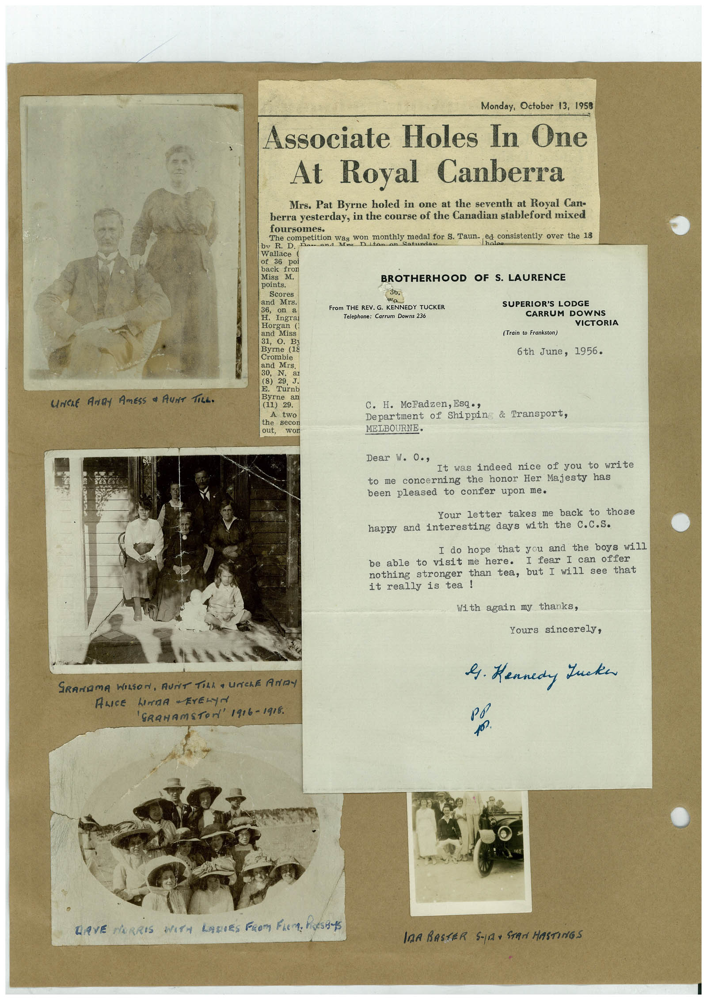

Book 1 · scan 086


Description
Transcription
Context
Review notes
Compare the machine draft with the scan. Handwriting and names need human review.
Artifacts
Edit the artifacts field in this note’s frontmatter to change these records. This summary is generated.
B01-S086-A01 — Newspaper clipping, Photo, Letter & Handwritten note — Book 1, scan 086
Types: Newspaper clipping, Photo, Letter, Handwritten note
Scope: Whole scanned page; individual items can be split out during review.
Caption: Not mapped yet.
Caption source: Not recorded yet.
Caption status: unmapped
Machine transcription
UNCLE ANDY AMESS • AUNT TiLL. Monday, October 13, 1958 Associate Holes In One At Royal Canberra Mrs. Pat Byrne holed in one at the seventh at Royal Can- berra yesterday, in the course of the Canadian stableford mixed foursomes. bv R. D. The Competition Was on month medal for S. Taun. cd. co ed consistently over the 18 Satundau Wallace ( of 36 poi back fron Miss M. BROTHERHOOD OF S. LAURENCE points. Scores 36, From THE REV. G. KENNEDY TUCKER Telephone: Carrum Downs 236 SUPERIOR'S LODGE CARRUM DOWNS VICTORIA Horgan ( and Miss 31, B3 Byrne (18 Crombie and Mrs. 30, N. (8) 29 J. Turnb Byrne an (11) 29. A the two out, (Train to Frankston) 6th June, 1956. C. H. McFadzen, Esq • , Department of Shippin & Transport, MELBOURNE. Dear w. O., It was indeed nice of you to write to me concerning the honor Her Majesty has been pleased to confer upon me. Your letter takes me back to those happy and interesting days with the C.c.S. I do hope that you and the boys will be able to visit me here. I fear I can offer nothing stronger than tea, but I will see that it really is tea! With again my thanks, Yours sincerely, 9. Kennedy Lucken SRANDMA WILSON, AUNT TILL a UNChE ANDY ALICE LINDA -ErELyN 'GRAHAmSTON' 1916-1918. LAVE NORRIS WITH LADIES PROM FLEM. PASS InA BASTER S-101 STAN HASTINGS